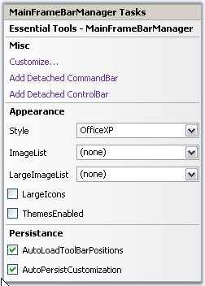
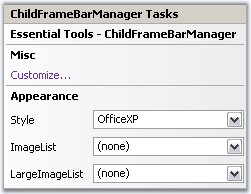

MainFrameBarManager
The tasks window lets you open Customize dialog using Customize... option. To add CommandBar and ControlBar, use Add Detached CommandBar and Add Detached ControlBar options.
In the Appearance section, you can select the required Visual Styles, imageList and LargeImageList. Themes for the Menus can be enabled by selecting the ThemesEnabled option and LargeIcons mode can be activated using LargeIcons option.
Toolbar Persistence can be enabled using AutoLoadToolBarPositions and AutoPersistCustomization options.

Figure 825: MainFrameBarManager Tasks Window
ChildFrameBarManager
The ChildFrameBarManager's Tasks Window gives the below Misc and Appearance options.

Figure 826: ChildFrameBarManager Tasks Window
See Also